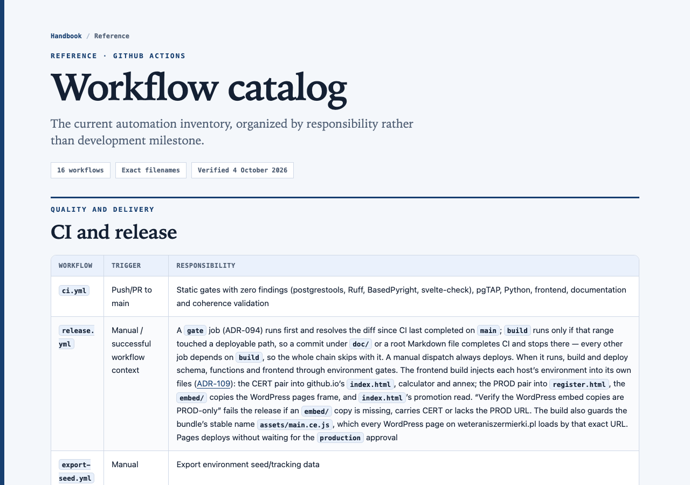
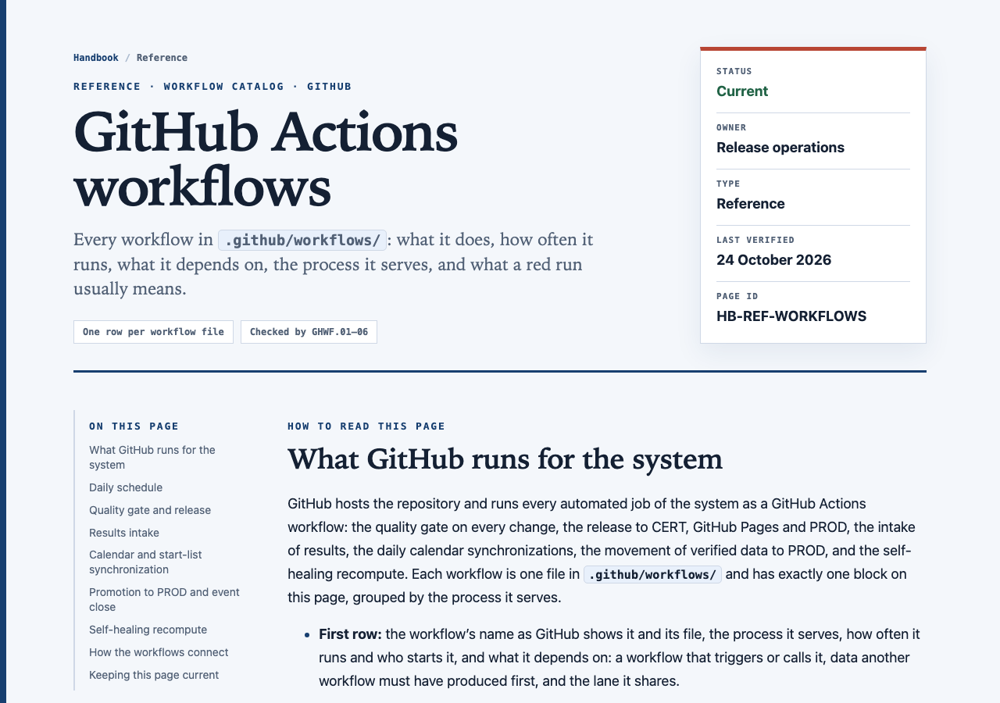
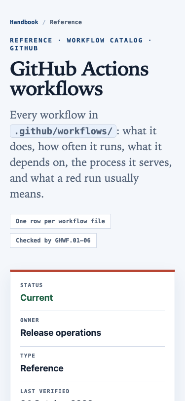
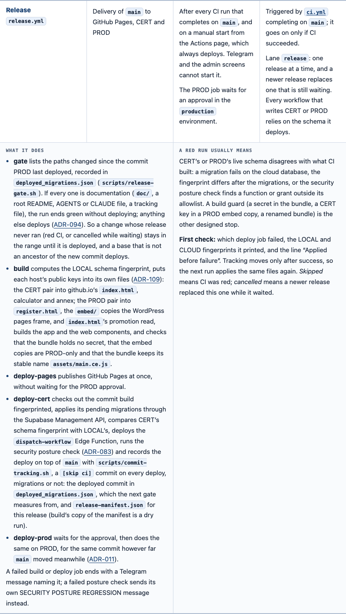
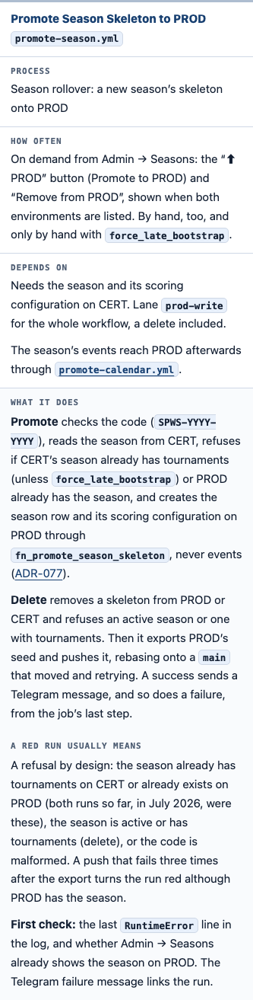

GitHub Actions workflows page · W2 · sign-off before main · 25 Oct 2026
The workflows page and all ten defects are done; six questions stand before the push.
Twelve commits sit on claude/ftl-seed-email-removal, none on main. Every code change was test-first, and the whole preflight was green before each commit (17 of 17 gates). Fixing the ten turned up more defects, and they are fixed too: two of them had already failed PROD releases, and two pipeline messages never reached Telegram at all. Nothing goes to main until you answer below.
§ 1 · on the branch
Twelve commits, oldest first
| Commit | What | Proof | Where it lands |
|---|---|---|---|
e956660b | Handbook pages wear the ADR page frame; the ADR Decision band stays inside the phone gutter (E2, E3) | html-preview sheet, decision F1 | Docs only |
b22ea0c6 | The GitHub Actions workflows page replaces the workflow catalog at its address (W1 A); the release skill keeps it current | GHWF.01–06 | Docs only |
dab03434 | W2 #1–3: scrape installs what it imports; a step piping into tee fails when its command fails; workflow inputs reach scripts only through env | WFDEPS.01, WFPIPE.01, WFINJ.01 | Workflows |
811a1e7d | W2 #4: the release gate measures from the commit PROD last deployed | release gate tests; ADR-094 amendment | Release |
fba0040b | W2 #6 (schedule): no cron fires at the start of an hour | WFCRON.01–02 | Workflows |
184f38f3 | W2 #7: the cert-write lane keeps every waiting job, like prod-write | WFLANE.01 | Workflows |
8cc46529 | W2 #8: every writing job ends in a Telegram alert; pushes retry; evf-sync without credentials is red; coherence gate 4 fires on main and fails; every deploy records its commit and the manifest | WFALERT.01–03, WFPUSH.01, evf.84, COH.01–05, release tests | Workflows, release, coherence |
ed853845 | W2 #9: the event ⬇ tooltip and the alias regen line say what has happened | 9.45r, 5.3.5; its own before/after sheet | Admin UI (goes live on push) |
1b485ec2 | Every deploy job applies the commit build fingerprinted; scripts/commit-tracking.sh records the deploy on main | RELTRACK.01–05; ADR-011 amendment | Release (PROD deploy path) |
9409b338 | W2 #10: comments and docstrings in 12 workflows and 7 Python modules say what the code does; ADR-061 and ADR-077 gain dated notes; evf-sync’s top-level write narrowed to read | WFCRON.03, WFPERM.01 | Comments, one permission |
d36b4f18 | Telegram: a refused message is sent again as plain text, any other refusal is logged (Python and the Apps Script bot) | TG.01–07, GAS.SEND.01–02 | Alerts |
0bb60bb7 | pgTAP: the draft commit test scores what it commits; its fixture season had no engine, so the commit skipped scoring with three warnings and the test still passed | 27.15b (RED: 0 of 7 scored) | Tests and docs |
Sheets behind them: the workflows page plan (W1, W2), the handbook frame (E2, E3, F1) and the two admin texts (#9, pixel-identical screens). The page itself: doc/handbook/reference/workflow-catalog.html.
§ 2 · the page, before and after
The workflow catalog on main, and the workflows page that replaces it
Published through html-preview: main against the page’s commit. The layout and stylesheet have not changed since; later commits only updated the text in the blocks they touched. The page has 18 workflow blocks, its table of contents and facts card, and no sideways scroll at 375px.




Two blocks as they read now, after the fixes:


§ 3 · found while fixing, and fixed
Beyond the ten
| Defect | Evidence | Fix |
|---|---|---|
| My #4 fix measured the gate from a field that moved only on releases with migrations | ADR-094 itself had rejected that base for this reason (its alternative 4); I had not answered it | Every deploy records its commit; the amendment answers alternative 4 (8cc46529) |
deploy-prod applied a newer main than build fingerprinted | PROD failed “Fingerprint mismatch after applying migrations” on 28 Aug (run 33143154193) and 5 Sep (run 33985677430), each time leaving the migration applied and the tracking behind | Both deploy jobs apply build’s commit; scripts/commit-tracking.sh records it on top of main (1b485ec2, ADR-011 amendment) |
| The posture alert said SECURITY POSTURE REGRESSION after any earlier failure, and nothing alerted after the tracking push | failure() in a step is true for any earlier failed step | Posture message for the posture step only; a deploy-failure message as each job’s last step (WFALERT.02) |
| Two pipeline messages never arrived | Markdown mode: “promoted to EVF_PUBLISHED” and “txt_code →” each hold a lone _, which Telegram refuses; no sender read the reply | One sender, python/telegram.py: refused formatting is sent again as plain text, other refusals are logged (d36b4f18) |
| HTML alerts quoting log lines could be refused | A traceback’s <module> inside <pre> | The quoted lines are escaped (WFALERT.03) |
| evf-sync held write access it no longer used | Its reconcile-log push moved into the promote-calendar job | Top level is read (WFPERM.01, ADR-083) |
| A pgTAP test committed results without scoring them and passed | Preflight printed three WARNING lines from 27_draft_tables.sql: its fixture season had no engine. The other four WARNING lines (28.7, C.1, 75.8) are notices the functions raise by design, provoked on purpose by those assertions | 27.15b asserts the scoring; the fixture assigns an engine (0bb60bb7) |
| Three comments kept the old cron hours after #6 | “Daily at 06:00 UTC” over '23 6 * * *' | Corrected; WFCRON.03 keeps named times equal to the crons |
§ 4 · decision records
Two amendments to read
- ADR-094, amendment of 24 October: the gate measures from the commit PROD last deployed; it answers the alternative it had rejected; a base that is not an ancestor of the new commit deploys. The ADR is still marked Draft (proposed 13 Sep), as it was.
- ADR-011, amendment of 25 October: every deploy job applies the commit build fingerprinted, which restores its own “same git SHA through all tiers”.
§ 5 · decide this
Six questions and the push
Answer like F1 A, T1 A, T2 A, P5 A, P6 A, E1 A, S1 A. P5, P6, E1 and T2 change behaviour or a screen, so they wait for your word; an A on any of them is built in this session, test first, each as its own commit, with T2 on its own before/after sheet.
| # | Question | Options | Rec. |
|---|---|---|---|
| F1 | E2 and E3: the handbook page frame and the Decision band fix, as on their sheet | A signed off B changes first (say which) | A |
| T1 | The two admin texts, as on their sheet (screens pixel-identical, one banner line differs) | A signed off B other wording (say which) | A |
| T2 | Admin → Fencers → Aliases is 425px wide on a 375px phone, before and after #9 | A fix it in this session with its own before/after sheet B leave it | A |
| P5 | W2 #5, the EVF parity sweep: it fetches each event’s url_event (the organiser’s page) instead of EVF’s results, so it never compares anything. Making it promote as designed would overwrite PROD scores outside promote, against ADR-113 §8 (“no other writer of results”), and promote would then refuse that event. | A a read-only parity check: read EVF’s results the way evf-sync does (scrape_event_results, POL), compare per tournament with PROD, report on Telegram; amend ADR-053B make it write as designed, with an ADR-113 amendment | A |
| P6 | W2 #6, the final start-list run: it reads “today” from the clock when it starts. The final run’s cron is 19:11 UTC: 21:11 in Warsaw in summer, 20:11 in winter. On 22–24 Oct, while the crons were on the hour, start-list runs began 0.2–3.5 hours late. A final run 2 h 49 min late in summer, or 3 h 49 min late in winter, starts after midnight in Warsaw: it then misses the window that closed (no alarm; pzsz-sync’s “no stored start list” alarm comes later), and the previous day’s late run raises a false alarm | A each run works on the date it was scheduled for, not the date it started B move the final run earlier, leaving less time for late lists C leave it; rely on pzsz-sync’s later alarm | A |
| E1 | export-seed.yml with source=cert writes CERT’s data as seed_prod_<date>.sql and points seed_prod_latest.sql at it, so the next CI and LOCAL boot load CERT’s data under PROD’s name | A a CERT export is written as seed_cert_<date>.sql and leaves the PROD seed aloneB keep it | A |
| S1 | The push | A push the twelve commits now, then build the accepted questions as their own releases B build the accepted questions first and push everything together | A |
§ 6 · after sign-off
The push, and what I watch
- In the integration checkout: fetch, merge the branch into
integration/main, run the preflight there, pushintegration/main:main. - Watch CI and then Release in the foreground. The release deploys fully: its gate fails open once, because the PROD commit recorded before the history rewrite is no longer on
main. GitHub Pages and the WordPress embed go live with no approval, the #9 texts included. - You approve the PROD job in GitHub’s
productionenvironment. - I verify: both fingerprints match; two tracking commits written by
scripts/commit-tracking.shname build’s commit;release-manifest.jsondescribes this release instead of March; the workflows page is live; the CERT and PROD schema are unchanged (no migrations in this batch). - Your step: paste
scripts/gas_telegram_bot.jsinto the Apps Script project, so the bot’s plain-text retry takes effect.
§ 7 · still open from the authorship rewrite
Two reminders
- Ask GitHub Support to purge the old commits and the 19
refs/pull/*that still hold the old history. - Other local checkouts still hold the old history: reset each to
originbefore working in it.
github-actions-w2-sign-off-2026-10-25 · 25 Oct 2026 · branch claude/ftl-seed-email-removal at 0bb60bb7 · preflight 17/17 on each commit · release history from gh run list/view (last 200 Release runs)